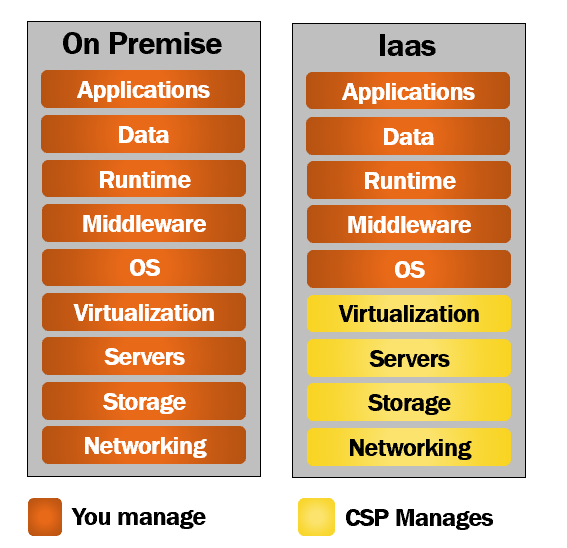

Services Models in Cloud
-> Up until recently, these are the 3 main cloud services offered by most cloud service providers.
-> These are Infrastructure as a Service(IaaS),Platform as a Service(PaaS) and Software as a Service(SaaS).
-> With cloud technologies advancing and maturing so fast, in addition to these 3 cloud offerings, we also have -
- Containers as a Service (CaaS)
- Functions as a Services (FaaS or Serverless Computing)
On premise data center
-> If we are not using cloud, we manage everything on-premise.
-> Basically our organisation is responsible for managing pretty much everything. Which includes -
- Procuring physical servers, storage and related hardware
- Install and set up the network
- Setting up the server room or data center
- Make sure there is main power supply, back-up power supply, cooling system etc are in place
- Install and configure virtualization software, operating system, any middleware or runtime components that your software developement or other teams need.
- Install, configure, and manage your custom or packaged apps and data.
-> So the point is, with on-premise data center, our organisation is responsible for managing pretty much everything.
Infrastructure as a Service (IaaS)
-> As the name implies, with Infrastructure as a Service, you rent or lease IT infrastructure from a cloud service provider like Microsoft Azure, Amazon Web Services or some
other cloud provider.
-> To understand this better, take a look at the following diagram.

-> As the name implies, with Infrastructure as a Service, the cloud service provider provides the infrastructure over an internet connection or through a virtual private
network.
-> Virtual Private Network(VPN) is a dedicated and secure private tunnel between you (i.e your organization) and the cloud service provider.
-> So the important point to keep in mind here is, there is no need for your organization to procure and manage the infrastructure.
-> It is the cloud service provider that is responsible for -
- Procuring physical servers, storage and related hardware
- Install and set up the network
- Make sure there is proper power supply, back-up power supply, cooling system etc are in place
- Pretty much the cloud service provider is responsible for setting up, securing and managing the cloud data center.
-> So in simple terms, this is how it works. The cloud service provider hosts the infrastructure at their data center.
-> You as a customer, provision this infrastructure on-demand over the internet or through a virtual private connection.
-> For the duration that you use the infrastructure, you pay a fee.
-> You are only charged based on the number of machines and resources that are actually being used.
-> As you can see from the image, all the yellow boxes, i.e networking, storage, servers and virtualization are managed by the cloud service provider.
-> The rest (i.e OS, Middleware, Runtime, Data and Application) are still managed by you.
-> This means you have better control and you can install any operating system of your choice, windows or linux for example.
-> So the point is, you can use this infrastructure for anything you want. Computational or storage needs.
-> May be, you have a web application which, you can host and run for example.
-> You can also use it for your storage needs.
-> For example, install SQL Server, Oracle or some other relational database and store your relational data.
-> I mean, a diverse set of use cases are supported. Infrastructure as a service (IaaS) is also known as hardware as a service (HaaS).
Who uses Infrastructure as a Service (IaaS)
-> In most organisations, it is the Infrastructure team that procures servers, and computers. Install software and provide systems to employees. Set up and manage networks.
-> So in most cases, it is usually your infrastructure team that uses Infrastructure as a Service (IaaS).
-> Sometimes, even software developments teams use this service if they want to have enhanced control over the underlying hardware and network.
Benefits of Infrastructure as a Service (IaaS)
Reduced financial risk -
-> There is a reduced financial risk for organisations.
-> Let's say, for example, you want to try something new (may be you are launching a new business or product line or experimenting something entirely new) and for that you
need a software application.
-> To host and run this application you need a server, all the related infrastructure and workforce to setup and maintain.
-> What if your new product launch or experiment fails. You have already spent a fortune to purchase the server and related infrastructure.
-> With the Infrastructure as a Service, you pay a fee, for as long as you use the cloud infrastructure. Host your app and run it from there.
-> If your new product launch or experiment succeeds, well and good. If it doesn't shut things down and you pay no longer.
-> Straight away, you can see how organisations can benefit from the reduced financial risk. This encourages businesses to try new things, experiment and innovate more.
Deployment Speed
-> Just imagine the time it takes to procure physical servers, storage and the related infrastructure. You need to purchase. Get them shipped over.
-> Create a server room or data center. Secure it. Install power supply and cooling systems. Setup and configure network. The list goes on.
-> You also need to hire skilled people to do all these. It takes a considerable amount of time to have all these in place.
-> Probably days, sometimes even months in worst case scenarios.
-> On the other hand, if you are using, Infrastructure as a Service, you point your browser to the cloud service provider web portal, and with a few clicks in just a few
minutes you have one or many virtual machines procured.
-> So you can see the speed with which we can procure and start using cloud infrastructure. So you really get time to focus on what matters to your business.
Provision resources from geographically closer locations
-> Cloud service providers, for example, Amazon, Microsoft and Google, have data centers all over the world.
-> This means, with the Infrastructure as a Service, you have the option of provisioning the servers from geographic locations close to your customers.
Unlimited scalability
-> You almost will never run out of resources in a public cloud. It provides near unlimited scalability.
-> You can set threshold limits to automatically scale up and down depending on the demand.
Platform as a Service (PaaS)
-> With the, Infrastructure as a Service the cloud service provider manages the infrastructure (i.e Networking, Storage, Servers and Virtualization).
-> We manage everything else (i.e the Operating System, Middleware, Runtime, Data and Application).
-> When compared with Infrastructure as a Service, Platform as a Service provides an even higher level of abstraction.
-> You can think of it as a layer on top of Infrastructure as a Service.
-> It shifts more responsibility to the cloud service provider.
-> As you can see from the diagram, you manage just your business applications or services and the underlying data. The rest is managed by the cloud service provider.
-> You don't have to worry about any of the things like, managing the network or underlying infrastructure. Installing the operating system updates, critical patches, runtime
or middleware components.
-> All these are taken care by the cloud service provider. This gives you, even more time to concentrate on what matters to your business.
Who uses Platform as a Service (PaaS)
-> Well, it is primarily used by software development teams. As the name implies, it provides the platform for developing software applications.
-> It is a complete development and deployment environment in the cloud.
-> It enables you to deliver everything from simple cloud-based apps to sophisticated, enterprise class cloud-enabled apps.
-> For example, let's say you want to develop data driven web applications. For this, we need a framework like ASP.NET Core or Java.
-> To store data we need a database like SQL Server or Oracle for example.
-> We need a web server to host and run a web application.
-> Purchasing all these softwares, installing, setting up the development environment and maintaining it, is not only expensive but also time consuming.
-> With Platform as a Service, the cloud service provider, provides all these softwares, installs and configures them.
-> You have the development platform available with a few clicks in just a few minutes.
-> You pay for the service on a pay-as-you-go basis and access it over a secure Internet connection.
-> When you no longer need the service, you shut things down and stop paying.
-> Windows Azure, AWS Elastic Beanstalk, and Google App Engine are few examples of Platform as a Service.
Advantages of Platform as a Service
-> Platform as a service is a layer on top of Infrastructure as a Service. So it has all the benefits of IaaS plus the benefits specific to PaaS.
-> IaaS provides many benefits like
- Reduced financial risk
- Deployment Speed
- Provision resources from geographically closer locations
- Auto scaling resources (i.e the underlying virtual infrastructure) up and down depending on demand
-> The following are the benefits specific to platform as a service.
-> Greatly reduces development time
- Platform as a Service greatly reduces development time. Just imagine the amount of time it takes to procure your own infrastructure, purchase all the softwares,
install, configure and set up your own development environment.
- With Platform as a Service, in just a few minutes with a few simple clicks you gain instant access to a complete software development environment.
- It also provides templates and reusable application components and features such as search, directory services, security features and so on.
-> Great support for global teams
- Platform as a Service, supports global teams. To access the development environment, all you need is an internet connection.
- So your development team members can be located anywhere in the world, I mean, in any remote location. It doesn't really matter.
- As long as they have an internet connection, they can connect and work together on projects.
-> Develop for multiple platforms
- PaaS provides options for developing multiple platforms, such as computers, mobile devices and browsers.
- In short, it makes developing cross-platform apps quicker and easier.
-> Affordability
- Affordability is another great benefit. Cloud supports pay-as-you-go model.
- So with it organisations of all sizes including small organisation and even individuals are able to use sophisticated development software, business intelligence and
analytics tools that they could not afford to purchase outright.
- So with the pay-as-you-go model you simply pay a monthly fee for as long as you want to use them.
Software as a Service (SaaS)
-> As you can see from the diagram below, with Software as a Service, the cloud service provider manages everythig for us. We do not have to worry about any of the following
- Purchasing and setting up physical hardware.
- Installing operating system.
- Virtualization.
- Setting up network.
- Installing and maintaining middleware, runtime and applications.
What is Software as a Service
-> All these are taken care by the service provider. So the bottom line is, all the hardware and software is maintained for us by the cloud service provider.
-> We simply access the software i.e the application which we want to use for our business over the internet.
-> The software runs at the cloud service provider data center on their physical servers.
-> Even the data the application captures is stored at the cloud service provider data center.
-> So the point, that I am trying to make is, everything is managed for us by the cloud service provider.
-> We simply access the service over the internet and as it supports pay as you go model, we pay a monthly fee based on the usage.
Who uses Software as a Service
-> Everyone, individuals and organisations of all sizes - small, medium and even large enterprises.
Examples of Software as a Service
-> I bet most of us will be using at least 2 to 3 Software as a Service applications.
-> A few examples of Software as a Service are GMAIL, Netflix, Amazon Prime, Dropbox, Google Drive and Office 365. How many of these SaaS applications do you use.
-> If you aske me, I use all of them. If we take GMAIL for example. It is hosted by Google on their physical servers at their data-centers.
-> We don't host or install anything on our computer or laptop. We simply fire up our favourite browser, point it to GMAIL.com and access the GMAIL software as a service over
the internet.
-> There are a wide variety of SaaS applications both for personal and business use cases.
-> We have SaaS applications for customer relationship management (CRM), financial management, sales management, human resource management (HRM), billing, entertainment,
storage, collaboration etc.
Benefits of Software as a Service
Very easy to get started
-> It is very easy to get started with a SaaS application. Think about a traditional business application running on-premise.
-> You need to purchase hardware i.e a physical server and all the related hardware. Install the operating system, runtime, middleware and any other dependencies.
-> On top of this you install the software application, configure it and then you have it available for business.
-> You also need to recruit work-force to maintain the servers and the application i.e install patches and updates.
-> Compare this to a SaaS application. You simply fireup your favourite browser and access the SaaS application over the internet.
-> There might be some customization and configuration required, but it is definitely very easy to get started with a SaaS application than running that same application
on-premise.
Accessibility
-> You access SaaS applications over the internet.
-> So this means as long as you have an internet connection, you can access a SaaS application from anywhere and any internet enabled device.
Automatic updates
-> With a SaaS application you don't have to worry about installing updates or patches.
-> These are automatically provided by the cloud service provider, that too, in most cases, with a ZERO down-time.
-> This obviously reduces the burden on the in-house development and IT staff.
Flexible usage-based pricing
-> Flexible usage-based pricing. No upfront huge capital expenditure.
-> You only pay for what you use. For example, if you have 10 users using the application you only pay for that 10 users.
-> You also have the flexibility to scale the number of users up and down depending on your business needs.
Reduced financial risk
-> With SaaS applications there is less financial risk.
-> For example, if you want to see if a SaaS application adds value to your business, you can start with 1 or 2 users and see if it's really adding value.
-> If it is, then you have the option to scale up the number of users. If it is not adding any value, you simply stop using the app and the payments.
-> These days, most cloud service providers also offer free trials. You can try a SaaS app for free and see if it is adding any value.
-> If it is not, there is no cost to your business anyway.
-> Compare this to buying an expensive hardware and a packaged app upfornt.
-> With SaaS applications, businesses definitely have reduced financial risks.
Affordability
-> Affordability is another great benefit.
-> Applications and solutions that fall in the category of CRM (Customer Relationship Management) and ERP (Enterprise Resource Planning) for example are very expensive to buy
out right.
-> Especially for individuals, small and medium organisations, it's a huge burden.
-> However, SaaS applications flexible pay-as-you-go model allows even small and medium organisations to trial and experiment if these expensive apps add value to their
business.
-> Basically it levels the playing field for everyone, including small businesses and individuals.